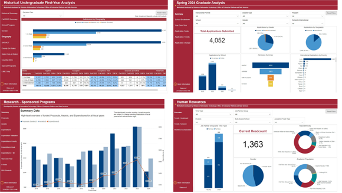
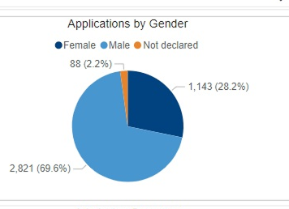
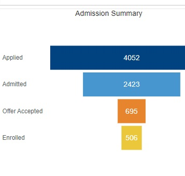

Each legacy pattern on the left is a real crop from the old dashboards. On the right is the rebuilt fix. Same data, read in seconds instead of squinted at.
01Clutter becomes Hierarchy
Before

legacy/four-dashboards.png
After
Lead with the answer
HEADLINE KPI
4,052
Total applications, this cycle
Admitted
2,423
Enrolled
506
One headline, then the trend, then the detail. The page has a clear first thing to read.
02Pie overload becomes Fit for purpose charts
Before

legacy/gender-pie.png
After
Sorted, ranked, comparable
Male2,821 · 70%
Female1,143 · 28%
Not declared88 · 2%
The rule: shares stay donuts, comparisons become sorted bars, time becomes lines.
03Navigation friction becomes Overview and drill down
Before
legacy/four-dashboards.png
After
One cockpit, four drill downs
Overview
Cockpit
Admissions
Enrollment
Research
People
Every module links back to the overview. Nothing is a dead end.
04No emphasis becomes KPI with delta
Before

legacy/adm-summary.png
After
Value, direction, context
4,052
Total applications
8.4%vs last year
The number now carries its own answer: how much, which way, and against what.
05Orienting time becomes Reading time
Before
90s orienting
legacy/adm-summary.png
After
An answer first page
90s reading
4,052
Applications are up 8.4% on last year
The redesign spends that first minute for the reader, so they spend theirs reading.